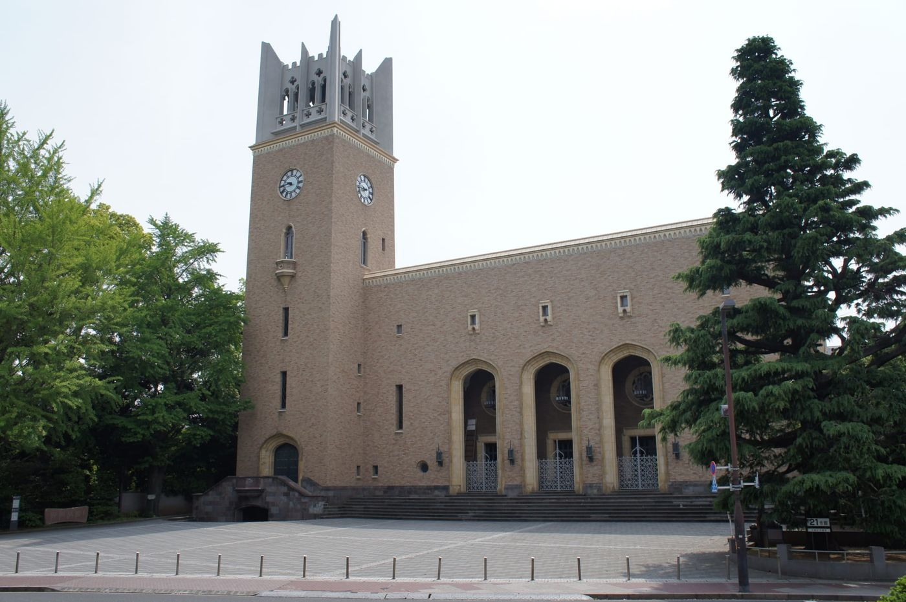

高校卒業
通信制高校で単位を着実に取得する。
DASS HIGH SCHOOL / SHIZUOKA — MONTRÉAL
日本で高校卒業を目指しながら、
カナダ・モントリオールへ2度留学する。
英語、異文化、探究、大学進学。
すべてを一つにつなげた、新しい高校生活です。
2度の海外留学1年次・2年次
合計約8か月モントリオールで学ぶ
3年間を一貫設計卒業・留学・進学
01 / ABOUT DASS
DASSハイスクールは、高校卒業、モントリオール留学、英語学習、探究活動、大学進学を、3年間の一つのストーリーとして設計する教育プログラムです。
学校法人角川ドワンゴ学園が設置するN高等学校・S高等学校・R高等学校で高校卒業資格の取得を目指しながら、DASSが日々の学習、海外生活、探究、進路選択までを一貫して支えます。
留学のために高校卒業が遅れることも、受験のために海外経験を諦めることもありません。日本とカナダを往復するからこそ得られる経験を、自分の将来へつなげます。
DASSハイスクールは、学校教育法上の高等学校ではありません。生徒はN高等学校・S高等学校・R高等学校のいずれかに在籍し、在籍校で高校卒業を目指します。DASSは、学習、留学、英語、探究、大学進学を一つの3年間として設計し、その実現に向けて伴走します。
DASS MODEL
通信制高校で単位を着実に取得する。
1年次と2年次にモントリオールで暮らす。
現地で使い、考え、経験を言葉にする。
3年間の成長を次の進路へつなげる。
02 / THREE-YEAR JOURNEY
海外に一度行って終わりではありません。日本とモントリオールを往復し、経験を振り返り、次の挑戦へつなげる。その循環が、成長を確かなものにします。
土台をつくり、世界へ出る。
レポート提出や単位取得のリズムをつくり、英語と海外生活の準備を進めます。7月から10月はモントリオールへ。教室とホームステイの両方で、英語を「使う生活」が始まります。
経験を深め、自分の問いを持つ。
一度目の経験を振り返り、英語力と探究テーマを深めます。6月から9月に再び渡航。知っている街へ戻るからこそ、受け身の体験から、自分で動く学びへ進めます。
経験を、自分の進路に変える。
志望校選び、英語資格、出願書類、面接、一般選抜対策まで、一人ひとりに合った進路戦略を組み立てます。留学や探究を、単なる思い出ではなく、自分を語る根拠に変えます。
03 / WHY MONTRÉAL
英語とフランス語、北米とヨーロッパ、多様なルーツを持つ人々。モントリオールは、異なる言葉と文化が日常の中で共存する街です。
語学学校の教室だけが留学先ではありません。ホームステイ先での会話、公共交通での移動、街の市場やイベント、世界各国から集まる留学生との交流。そのすべてが、自分の常識を広げる学びになります。
DASSの語学学校で、世界各国から集まる留学生と学びます。教室の外でも英語を使う毎日が続きます。
二つの公用語と多様な文化が共存する環境で、自分とは異なる背景を持つ人と関わる力を育てます。
ホームステイと現地生活を通じて、時間管理、移動、意思表示など、自分のことを自分で進める力を身につけます。
国籍も母語も異なる仲間と学ぶ。
それがDASSの日常になります。
04 / ENGLISH IN MONTRÉAL
授業が終わっても、英語を使う一日は終わりません。
ホームステイ先での会話、移動、買い物、世界各国から集まる留学生との交流。英語を使わなければ生活が進まない環境が、英語を「勉強」から「使える力」へ変えていきます。
世界各国から集まる留学生と、聞く・話す・読む・書くを実践します。
食事や日常会話を通して、教科書にはない自然な英語に触れ続けます。
母語の異なる仲間と、共通語である英語を使って関係を築きます。
英語を使わないと始まらない毎日が、
英語力を変えていく。
05 / ENGLISH & SUPPORT
二度の留学を単発の体験にしないために、渡航前、二度の留学の間、帰国後まで英語学習をつなげます。
WHY ENGLISH IMPROVES
4技能を学び、授業内で繰り返し使う。
生活の中で聞き、話す時間を増やす。
伝える必要があるから、使う力が育つ。
一度目の課題を、二度目の留学で乗り越える。
DASS ENGLISH SUPPORT
現地生活と授業に必要な基礎を整える。
帰国後の課題を整理し、次の渡航に備える。
英検・IELTSなど、進路に必要な力へつなげる。
国内外の大学から、本人に合う進路を考える。
06 / LEARNING & SUPPORT
通信制高校の学習、海外生活、大学受験。自由度が高いからこそ、計画と伴走が必要です。DASSは、生徒の主体性を尊重しながら、必要な場面で支えます。
STUDENT GROWTH
知識として覚えるだけでなく、人と関わるために使う。
違いを恐れず、相手を理解しながら自分の考えを伝える。
分からないことを放置せず、自分で考え、助けを求め、行動する。
経験から問いを見つけ、自分の言葉で社会や進路につなげる。
DASS SUPPORT
レポート、単位、スクーリングを確認し、卒業までの学習を整えます。
渡航前の準備からホームステイ、現地での困りごとまで支えます。
海外経験を振り返り、自分のテーマと表現へつなげます。
国内外の大学と多様な入試方式から、本人に合う道を考えます。
07 / UNIVERSITY RESULTS
DASSで学んだ生徒は、国内大学の総合型・推薦・一般選抜から海外大学まで、それぞれの目標に合わせて進路を実現しています。

2026 UNIVERSITY
ACCEPTANCES
※2026年度のDASS在籍生・受講生の合格実績を掲載しています。
世界順位：QS World University Rankings 2027。順位未記載校は表記を省略。
08 / TUITION & FEES
高校の学費、DASSの指導費、2度のモントリオール留学を含む費用の目安です。
01入学金
10万円
入学時のみ
02授業料
50万円／年
通信制高校学費・DASSハイスクール学費
教材費別
031年次留学費
200万円
授業料・ホームステイ費用（3食付）
航空券別
042年次留学費
200万円
授業料・ホームステイ費用（3食付）
航空券別
掲載項目の3年間合計
560万円
※費用は変更となる場合があります。教材費、航空券、海外保険、現地での個人的支出などは含まれません。詳細は個別相談時にご確認ください。